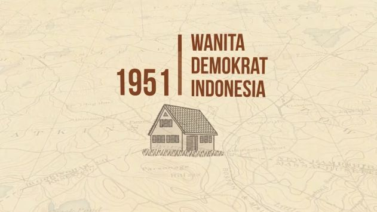
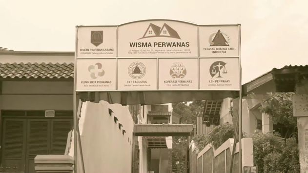
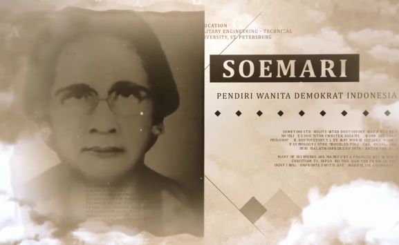
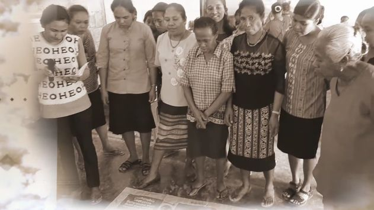
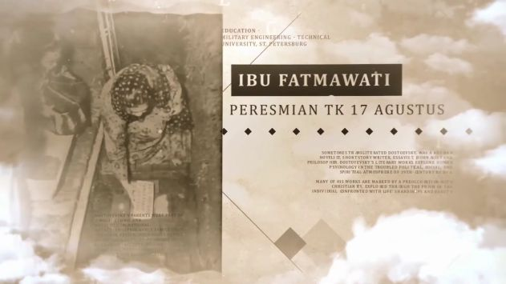
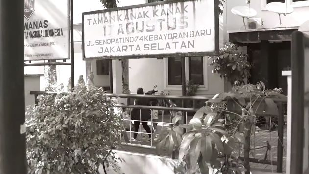
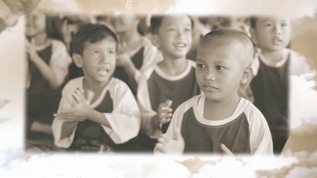
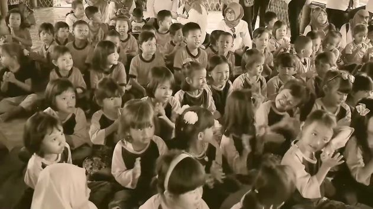
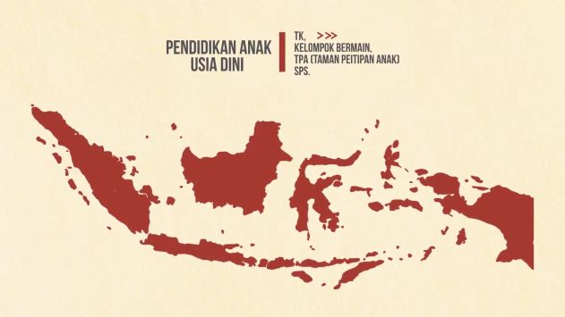

Pergerakan Wanita Nasional Indonesia adalah organisasi mandiri yang sejak semula gerak dan langkahnya tidak dapat dipisahkan dari perjuangan kemerdekaan bangsa Indonesia.
Setelah tercapainya Kemerdekaan Republik Indonesia, 17 Agustus 1945, PERWANAS tetap menyatukan derap langkahnya dengan perjuangan rakyat Indonesia, untuk mengisi kemerdekaan melalui pembangunan di segala bidang kehidupan.









Dalam era globalisasi yang penuh tantangan, PERWANAS terus memantapkan kiprah perjuangannya dengan menyempurnakan Organisasi, Kaderisasi dan Konsolidasi serta Tata-kerja, yang dituangkan melalui penyempurnaan Anggaran Dasar dan Anggaran Rumah Tangga, Visi & Misi, serta Program Kerja.